Персонажи и фракции мира Ауракс
Пять этапов пути — от беззаботного мальчишки до Повелителя Колец
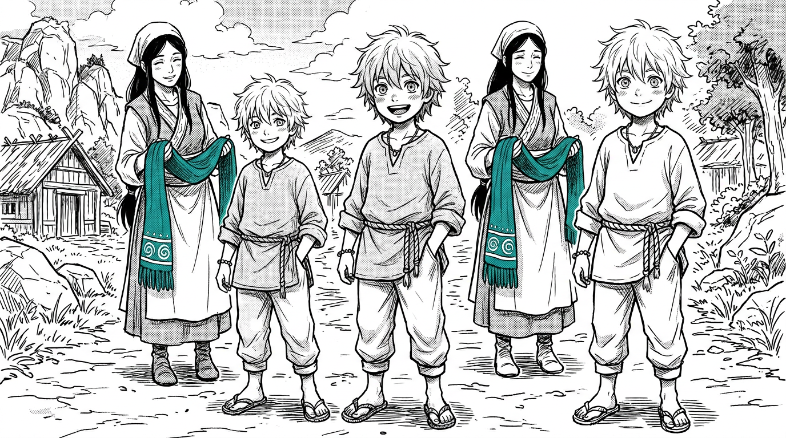
Мягкие непослушные волосы, открытая улыбка, румянец на щеках. Просторная льняная туника, плетёный пояс. Шарф ещё принадлежит матери — длинный, бирюзовый, с белыми спиралями Великого Дыхания.
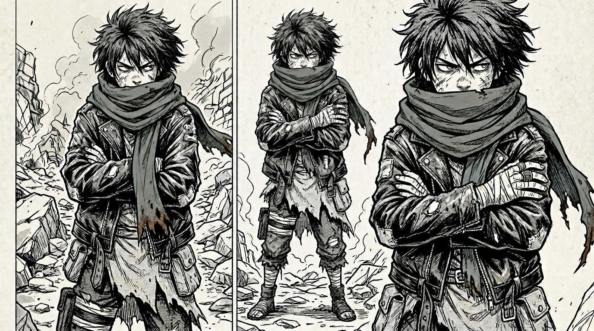
Дикие, отросшие, грязные волосы. Взгляд исподлобья, ссадины, обветренная кожа. Оборванная одежда, кожаная куртка не по размеру, обмотки на ногах. Шарф замотан в несколько слоёв — щит от мира. Обгоревшие концы — память о пожаре. Кольцо Ветра массивно на детской руке.
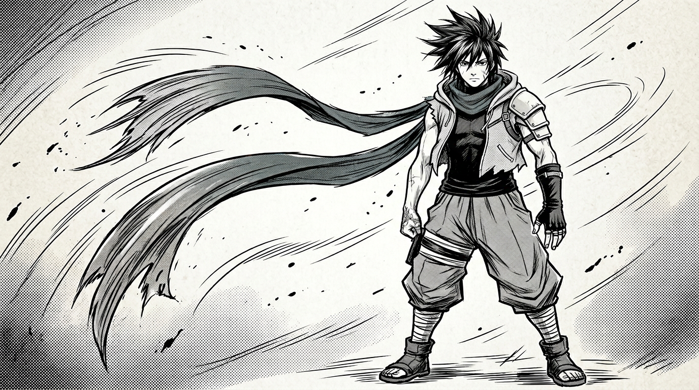
Короткие колючие волосы, шрам на скуле. Тёмная водолазка без рукавов, жилетка с глубоким капюшоном, штаны-хакама с бинтами, асимметричный наплечник, перчатка без пальцев на правой руке. Шарф расслаблен — два конца развеваются как бирюзовые крылья.
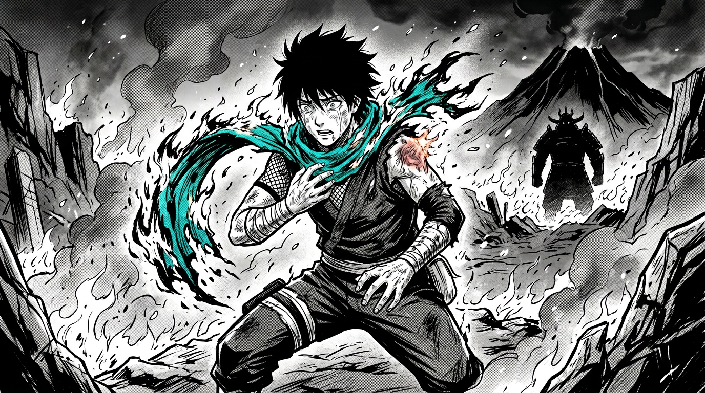
Шарф вспыхивает и сгорает в пепел. Ожог на шее. Разрыв цепей прошлого — Влад отпускает мёртвых и обретает истинную силу. За спиной — силуэт Генерала Огня.
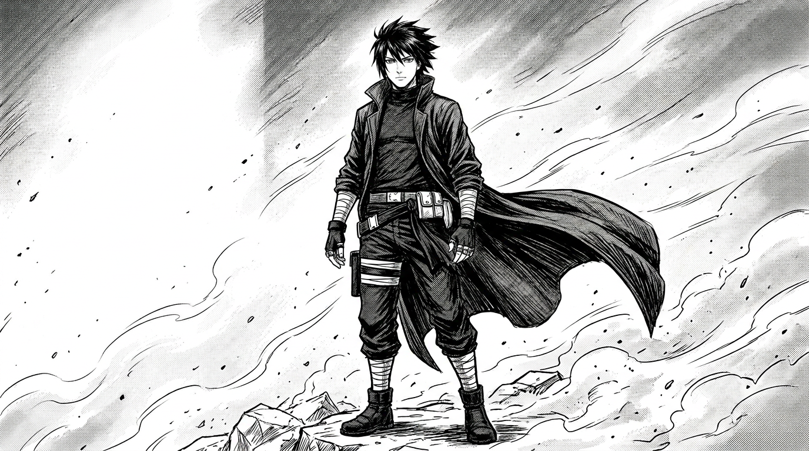
Без шарфа. Силуэт стал гладким, строгим, опасным. Длинный плащ-пыльник развевается на ветру. Шрам от ожога на шее. Волосы приглажены — знак контроля. Глаза спокойны и холодны, как центр урагана. Кольца на обеих руках.
Одежда и культура шести народов расколотого мира
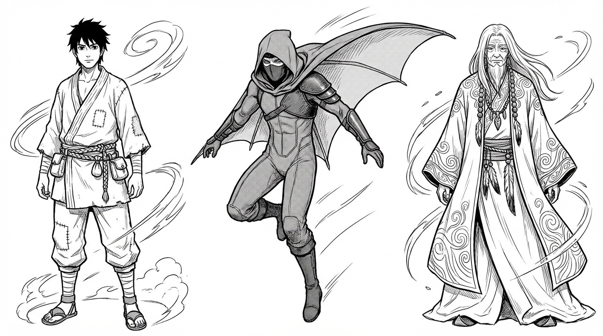
Лёгкая многослойная одежда из дышащих тканей. Воины — в облегающих костюмах с капюшонами и плащами-крыльями. Старейшины — в мантиях с вышивкой спиралей ветра, украшениях из дерева и перьев.
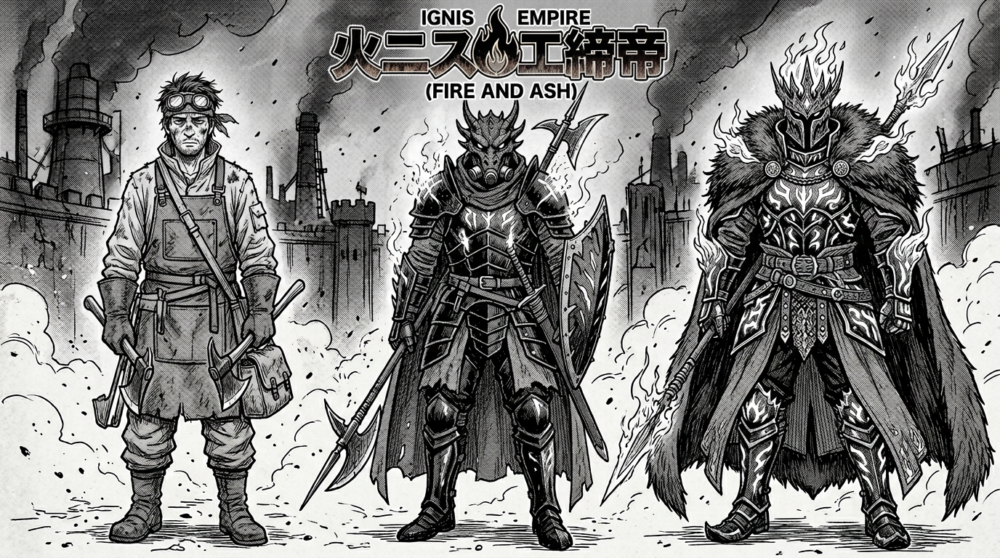
Грубая огнеупорная одежда, гоглы от пепла. Воины — в обсидиановой пластинчатой броне с демоническими шлемами и респираторами. Генералы — в доспехах с раскалёнными рунами, накидках из шкур пепельных волков.
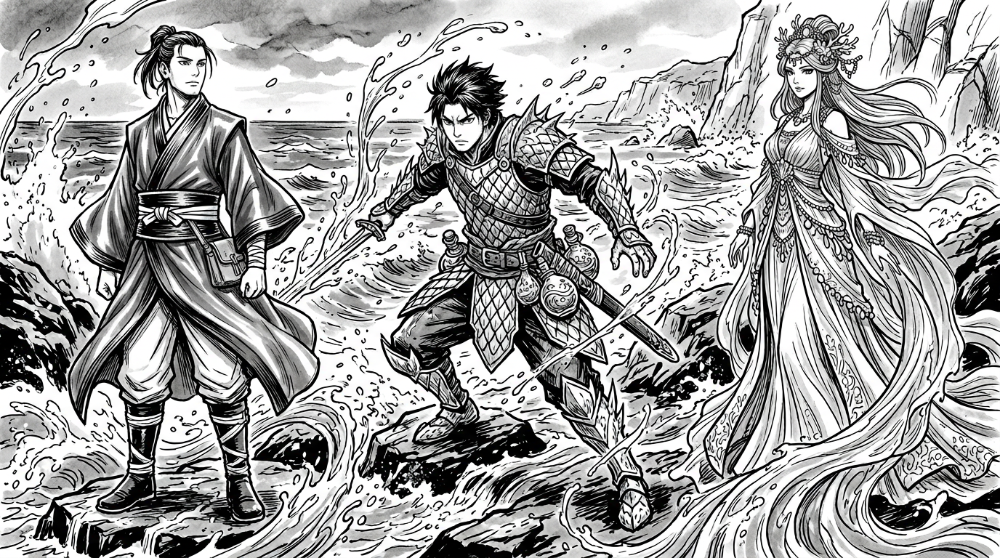
Элегантные водоотталкивающие ткани, широкие пояса-кушаки. Воины — в чешуйчатой броне из зачарованного льда с флягами для водяных хлыстов. Матриархи — в полупрозрачных шелках, украшениях из кораллов и жемчуга.
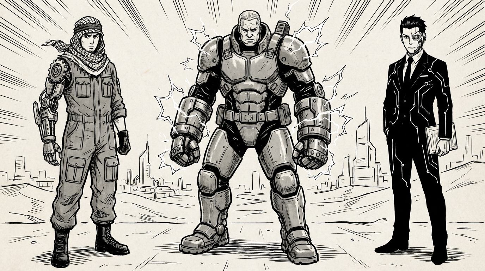
Комбинезоны с карманами, арафатки от песчаных бурь, механические протезы. Инфорсеры — в экзоскелетах на кольцах электричества, тяжёлых ботинках заземления. Совет Директоров — в строгих костюмах с неоновыми вставками и кибернетическими глазами.
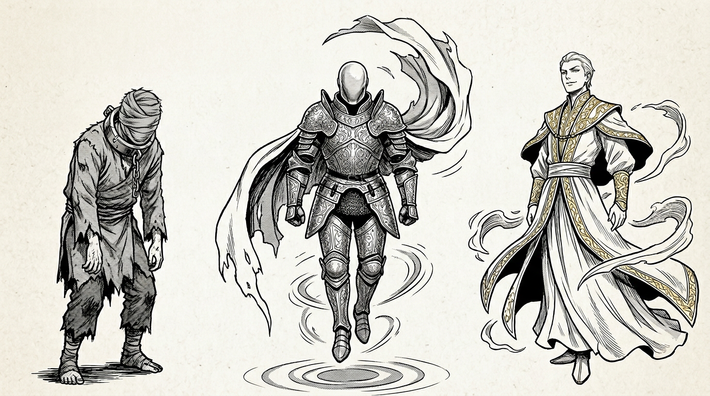
Прислуга — в серых безликих лохмотьях с тяжёлыми металлическими воротниками покорности. Королевская Гвардия — в сияющей золотой броне, парит в воздухе, глухие слепые шлемы. Знать — в левитирующих белых и золотых одеяниях с идеальной иллюзорной кожей.
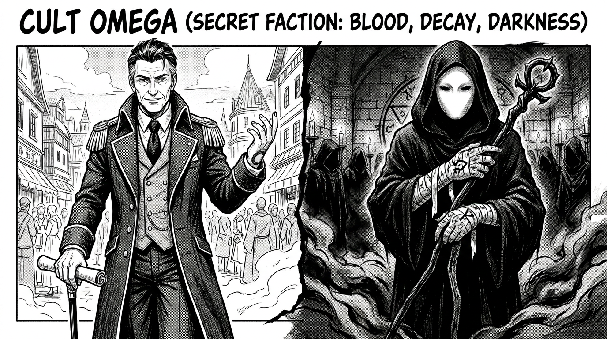
Днём — богачи и генералы из других фракций, вычислить невозможно. На тайных собраниях — светопоглощающие бархатные плащи, пустые маски без глаз и рта, забинтованные руки со шрамами от магии Крови.